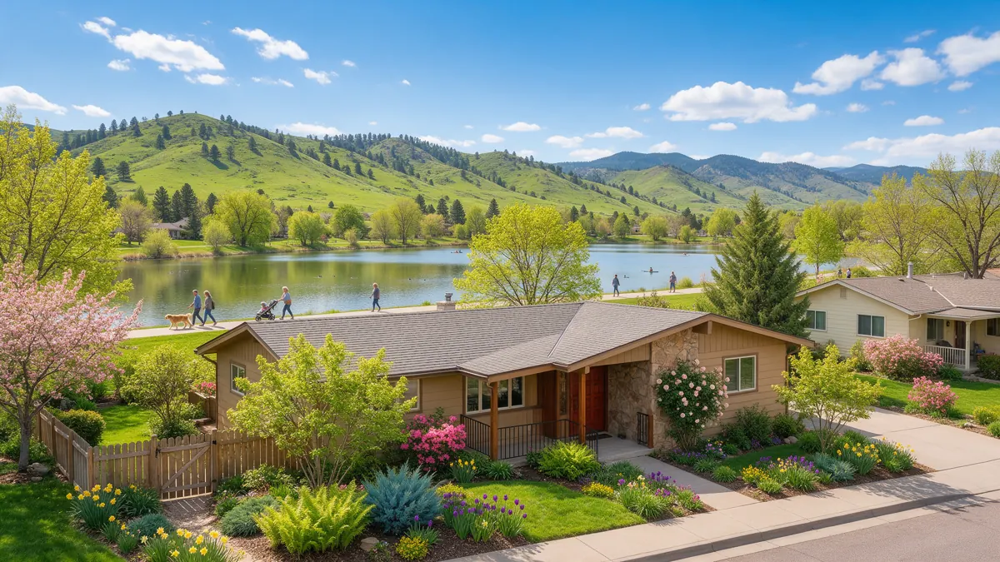

Lakewood CO Plumber Handbook

Searching for a plumber in Lakewood CO? Use this handbook as a checklist for your next leak. Plumbing Pros Colorado is a referral line, so we connect you with an independent local plumber who does the actual work. Lakewood is the largest city in Jefferson County, with older neighborhoods near Colfax and newer ones to the west, so house age matters a lot when planning repairs.
Your first actions
Find the main shutoff and close it. If you live in a condo or townhome, there may also be a unit shutoff in a utility closet. Then open a low tap, stop appliance use, and soak up water.
If water is coming through a ceiling from a neighbor above, call the building manager at once and document the damage. Turn off power in the affected room only if you can do so safely.
- Close the main or unit shutoff
- Stop using appliances on the line
- Contain water with towels
- Call the manager if it is a shared building
- Photograph the damage
What the warning signs look like
Neighborhoods along Colfax Avenue and near Lakewood's Belmar Park area contain houses from many periods. Warning signs include brown water after the house has sat unused, low pressure at one tap, slow drains in the lowest fixtures, and a cracked or moving tile floor.
Around the Federal Center area and Union Boulevard corridor, older apartment buildings may have shared risers where leaks travel between units. Mention that when you call.
Lakewood has many mid-century ranch homes with crawl spaces or partial basements. Ask the plumber whether the crawl space is dry and accessible, since moisture there can hide a slow leak for years.
What a plumber does to diagnose
The plumber starts with the water meter and the main, checks pressure, and inspects exposed pipe in basements and utility rooms. Many Lakewood houses have basements, which makes tracing supply and drain lines more direct.
If the problem is a drain, a camera inspection reveals sags and offsets. Weir Gulch and Lakewood Gulch run through the city, and houses near drainage corridors may have soil that holds moisture, which can shift a sewer lateral.
Older homes near Lakewood's eastern border with Denver were often built in the same era as the neighboring Denver blocks. Mention the year of construction to the plumber, because it tells them which materials to expect.
What to ask
Ask for the diagnosis in plain words, what repair is being proposed, and whether alternatives exist. Ask what is being used for the new pipe, how the work will affect water service in your home, and how long the water may be off.
If you rent, ask the plumber to put findings in writing so you can share them with your landlord. If you own, ask what documentation will be useful for a possible insurance claim.
If a plumber recommends a sewer camera inspection, ask to see it live or get a copy. A clear picture of roots, sags and cracks helps you decide among cleaning, lining or digging.
Repair or replace: the logic
A leak from a worn stop valve is a repair. Cast iron stacks that are scaled inside, galvanized lines that restrict flow, and clay laterals that crack repeatedly suggest replacement. Condos add a layer: some lines are shared, so the owner of the pipe decides.
Water heaters in basements and closets should have a drain pan, and a leaking tank body usually means replacement. Ask what size and type suit your household.
Condo and townhome owners should read their association documents so they know which pipes belong to the owner and which belong to the association. That affects who arranges and pays for the repair.
Prevention for Jefferson County homes
Check around the base of toilets, under sinks and behind the washer every season. Keep a clear path to the main shutoff, and label it. Before winter, disconnect hoses and protect pipes in garages and along north-facing walls.
If your home is near the foothills toward Dakota Ridge and Green Mountain, expect colder, windier nights, and insulate accordingly. A small habit now can spare you a large repair later.
Make a habit of looking at the ceiling below any upstairs bathroom whenever you clean. Catching a stain early is far easier on both the pipe and the drywall than finding it after the paint peels.
If you are selling or buying in Lakewood, ask for plumbing history during the process: repairs, replaced sections and any known sewer issues. A plumber can then check the items that matter most.
Frequently asked questions
What should I do if my condo leaks from the unit above?
Tell your building manager or HOA immediately, document the damage with photos, and shut off water to your own unit if it helps. The owner of the pipe is usually responsible, and a plumber can identify whether the line is shared. Watch for water pooling near walls or under the water heater, and report it rather than waiting for it to grow.
Can a leak damage the foundation?
A long-term leak near a foundation can soften soil, which then shifts as it dries. Clay soils on the Front Range amplify this. Address leaks early and keep downspouts directing water away from the house. Plan for a plumber to check the washing machine box behind the wall as part of any investigation.
Why do my faucets sputter after a repair?
Air gets into lines when water is shut off. Opening all faucets and flushing them one at a time usually clears it. Remove and clean aerators if debris appears. If you have a second floor above, check ceilings below bathrooms after the shower for the first sign.
Are drain flies a sign of a leak?
They can indicate a drain with buildup, a dry trap or a slow leak. A plumber can check the trap and pipe, and clean the drain. Pouring water into rarely used drains keeps traps full. Baking soda and vinegar do not fix a leak. A plumber should look at repeated clogs.
When is a sump pump a plumbing matter?
A sump pump handles groundwater, and plumbers often service and install them. If water keeps entering a basement, a plumber can tell whether the cause is groundwater or a pipe. Pans under water heaters catch drips but do not stop them, so repair the source.
Plumbing services in Lakewood
- Water Leak Repair
- Emergency Plumbing
- Drain Cleaning
- Water Heater Services
- Sewer Line Repair
- Gas Line Services
- Slab Leak Repair
- Pipe Repair & Replacement
- Toilet Repair
- Bathroom Plumbing
Nearby Colorado cities
- Water leak repair in Golden
- Water leak repair in Conifer
- Water leak repair in Aurora
- Water leak repair in Loveland
Ready to talk to someone? Call (720) 794-0974 or visit a Jefferson County plumber.